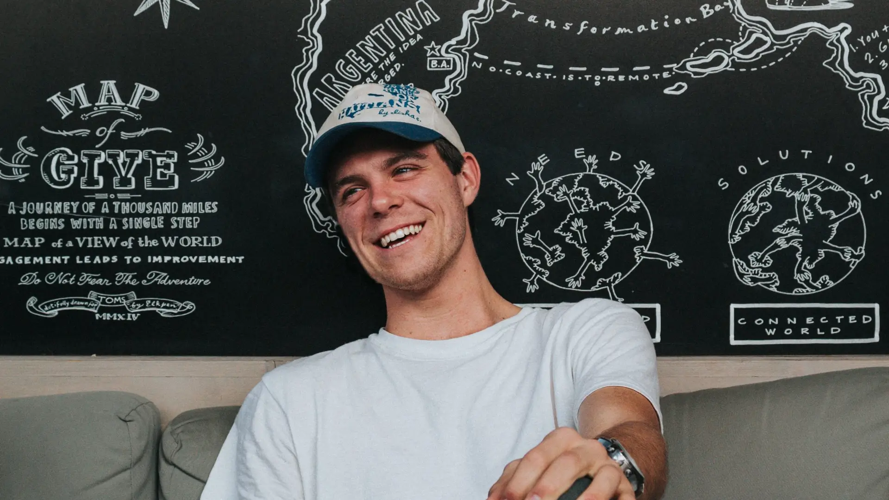

Hello there to anyone who happens to read this, name's Ryan and I'm the founder and proprietor of Morning Muse, our cosy chain of artisanal cafés.
To talk a little about myself, I grew up in Brighton which is well known for having a thriving coffee scene. Ever since I was a young lad, I always loved visiting these coffee shops after school; I'd sit there for hours reading and studying. Naturally, as I grew up, I dreamed of opening Morning Muse as my little cosy corner of the world.
I followed my dreams and here we are. I've been tremendously thankful to welcome you into our cafés across Brighton, London, and Manchester. I hope you enjoy our little cosy corners of the world as much as we love brewing for you.
Say Hello or Inquire
Primary Line: +44 (0) 20 7946 0920 • WhatsApp / Alt: +44 (0) 7700 900 842
Email: hello@morningmuse.co.uk
